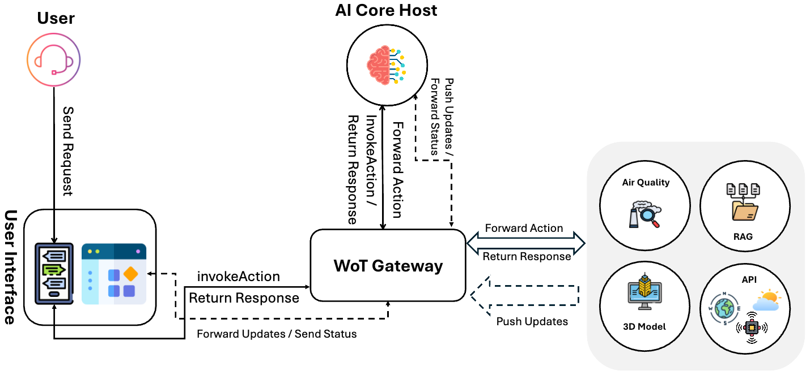

CityBot is a conversational interface for exploring Sofia’s urban digital twin. An LLM maps free-form requests to typed WoT actions, while a Cesium.js frontend renders navigation, semantic filtering, pollution replay, and forecast visualizations on an interactive 3D globe.
Urban digital twins integrate heterogeneous geospatial, environmental, and semantic data, but their use often remains limited to experts operating GIS tools, domain-specific APIs, or bespoke dashboards. SmartBot lowers this barrier with a WoT-grounded conversational interface for Sofia, Bulgaria — exposing urban capabilities as a machine-readable affordance catalog that an LLM can invoke through typed actions.
Building on a previously introduced WoT-based architecture for integrating LLM agents with heterogeneous systems, SmartBot maintains bidirectional synchronization between the conversational context and the live 3D environment: LLM-selected actions update the Cesium.js globe, while camera and building state ground subsequent user requests.

Hosts four Domain Things with W3C Thing Descriptions over HTTP/MQTT: citymodel, airquality, api, knowledge.
Multi-turn planning loop: injects camera and selected-building context, invokes WoT actions as OpenAI tools, supports Whisper STT and Kokoro TTS via DeepInfra.
Adapt heterogeneous urban services — CityGML 3D tiles, PostgreSQL air quality, sensor feeds, Nominatim, OpenWeatherMap, Qdrant RAG to a common affordance model.
Cesium.js WoT consumer: MQTT-driven map updates, incremental response streaming, bidirectional shared context with the LLM Thing.
| Type | Group | Examples |
|---|---|---|
| Action | Navigation | flyTo, getCoordinates, setCameraView, reverseGeocode |
| Action | 3D model | loadTiles, filterBuildings, setVisualizationStyle |
| Action | Queries | getWikipediaSummary, getWeather |
| Action | Pollution | replayPollution, replayPrediction, clearPollutionClouds |
| Event | Map state | Layer, tileset, sensor, building-selection, pollution-replay updates |
| Property | Context | cameraState, selectedBuildingState, weather configuration |
| Resource | Description | Sources | Thing |
|---|---|---|---|
| Sofia 3D City Model | CityGML-derived 3D Tiles with per-building walkability, height, UHI, energy bounds, and building class (residential, healthcare, educational, commercial) | citymodel |
|
| Historical Air Quality | Hourly PM₁₀ / PM₂.₅ grid from Sensor.Community (Sofia & Burgas since 2018), replayed over user-specified periods with CAQI coloring | airquality |
|
| ML Pollution Forecasting | 24-hour PM forecasts via LSTM (trained 2018–2022, validated 2023–2024) using historical PM + meteorological variables | airquality |
|
| Environmental Sensor Network | Stations from Sofia Municipality, ExEA, and GATE — PM, gases (CO, NO₂, O₃…), and meteorological variables | api |
|
| Wikipedia-Grounded Knowledge | Buildings linked to Bulgarian Wikipedia; offline RAG with BAAI/bge-m3 embeddings in Qdrant, filtered by wiki_pageid at query time |
|
knowledge |
| Weather & Geocoding | Nominatim (OpenStreetMap) forward/reverse geocoding chained with OpenWeatherMap for live conditions | api |
Each step below shows a different combination of data access, tool chaining, and visual feedback on the Sofia digital twin.
Invokes loadTiles + setVisualizationStyle — graduated-color style from per-building walkability scores.
Invokes filterBuildings with class=healthcare; matching buildings highlighted in red, others in white.
LLM translates “lowest walkability” to threshold <30 and filters with blue highlight.
Invokes replayPollution; frontend animates CAQI-colored clouds hour by hour from PostgreSQL grid data.
Invokes replayPrediction; ML forecast grid rendered with the same CAQI cloud representation.
User selects National Palace of Culture; wiki_pageid from building metadata drives getWikipediaSummary + Qdrant retrieval.
This research is supported by the GATE project, which is funded by the Horizon 2020 WIDESPREAD-2018-2020 TEAMING Phase 2 programme under grant agreement no. 857155, and the programme “Research, Innovation and Digitalisation for Smart Transformation” 2021–2027 (PRIDST) under grant agreement no. BG16RFPR002-1.014-0010-C01 and DS4SSCC-DEP project, funded by the European Union Digital Europe Work Programme 2021–2022 under Grant Agreement no. 101123342.